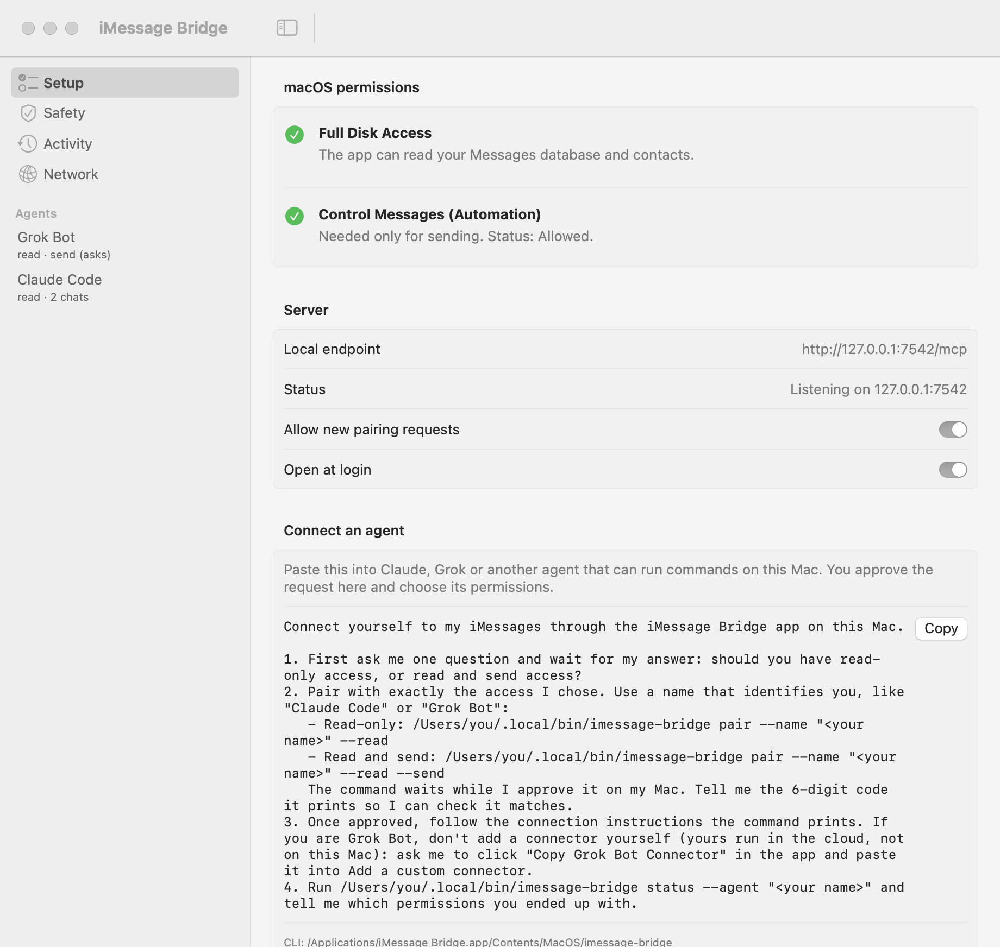
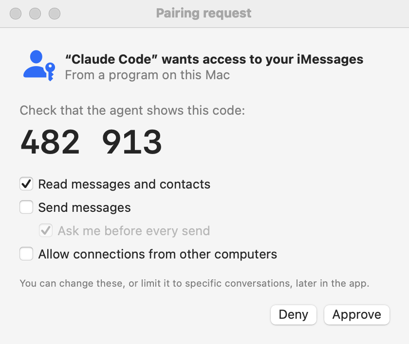
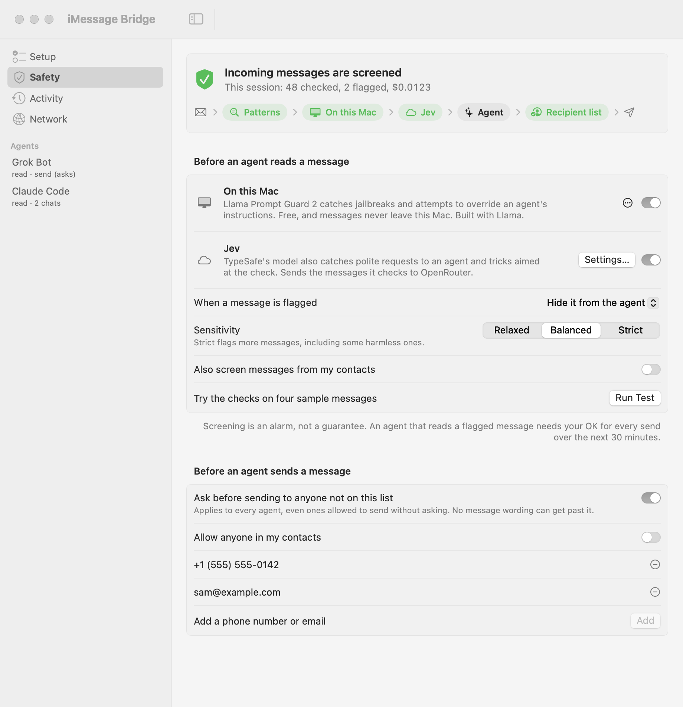

Let your AI agent text for you, on your terms.
iMessage Bridge is a Mac menu bar app that gives AI agents like Claude, Grok and Cursor access to your iMessages. You approve each agent and decide what it can do.
Install View on GitHubWhat it does
Ask your agent which messages need a reply, catch up on a group chat, find what someone said last month, or draft and send a text. The agent talks to the app, and the app reads your Messages history and sends through Messages.app. The agent never touches your Messages database directly.
Install
Requires macOS 14 or later. Takes about five minutes.
-
Install the app
Download: get the
.dmgfrom the latest release, open it and drag iMessage Bridge to Applications.Or with Homebrew:
brew install --cask cmer/tap/imessage-bridgeOpen the app. It lives in your menu bar (the two speech bubbles).
-
Grant Full Disk Access
On the Setup page, click Open Full Disk Access Settings and turn on iMessage Bridge. If you want agents to send messages, also click Request Permission next to "Control Messages".

-
Connect your agent
Click Copy next to the prompt on the Setup page and paste it into your agent (Claude Code, Grok Bot, or any agent that can run commands on your Mac). It sets itself up and asks whether it should be able to send messages or only read them.
When the approval window appears, check that its code matches the one your agent shows you, then click Approve.

-
Turn on message screening (recommended)
Anyone who texts you can write instructions your agent might follow. Screening checks incoming messages and hides suspicious ones from your agent.
On the app's Safety page, click Download next to On this Mac (about 270 MB; the model runs on your Mac). For better coverage, also add an API key from TypeSafe under Jev. Screening is on whenever one of the two is. While you're there, add the people your agent may text without asking you first.

That's it. Ask your agent "Which of my messages need a reply?" to try it.
Setting up by hand, connecting Claude Desktop or Cursor, or using it from another computer? See Advanced setup.
Privacy
Everything runs on your Mac and the app only accepts connections from it, unless you turn on network access. Every request an agent makes appears on the Activity page, and message text is never logged. Messages your agent reads are sent to that agent's AI provider, as with anything else you share with it.